CHRONOLOGICAL ORDER
[ ERA ]
[ CANONICITY ]
CANON
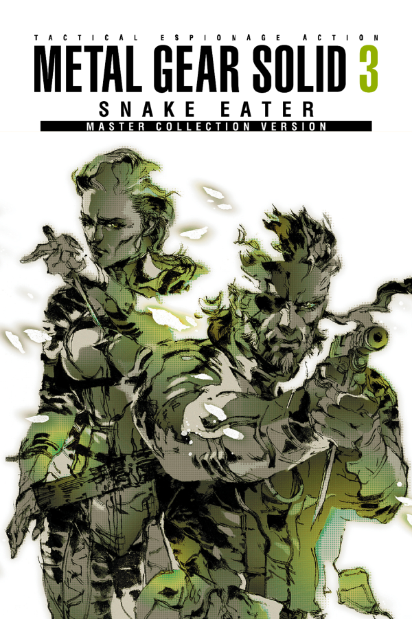
Snake Eater(1962)
CANON
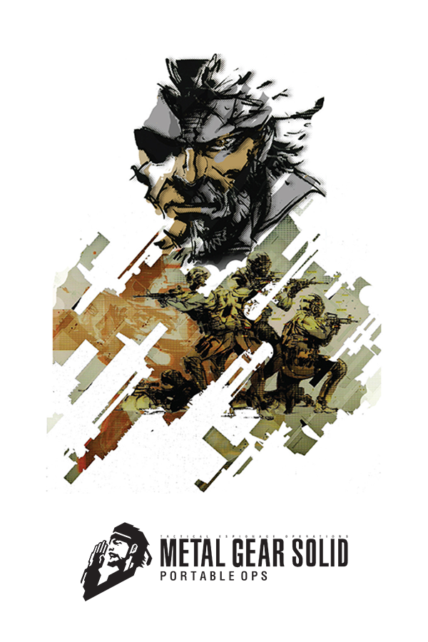
Portable Ops(1970)
CANON
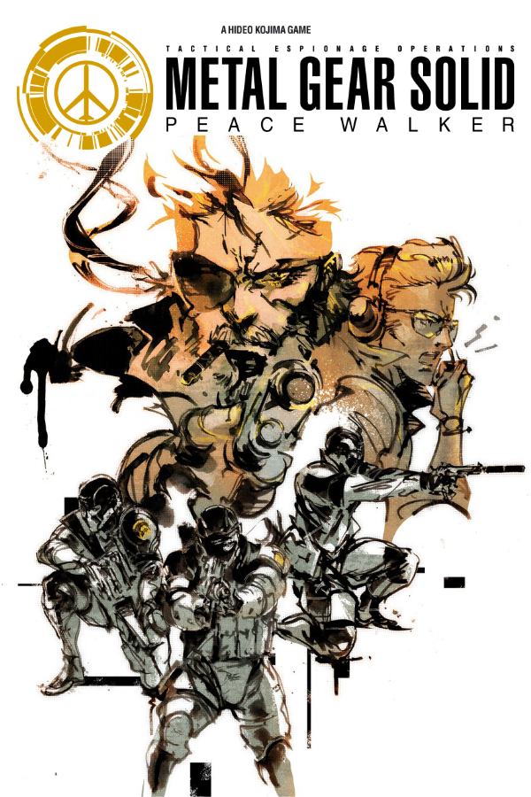
Peace Walker(1974)
CANON
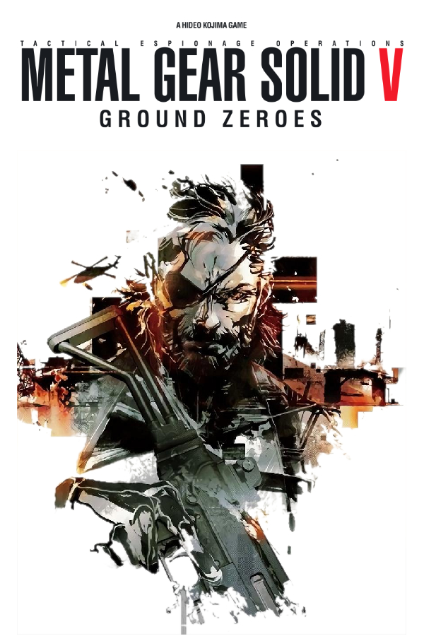
Ground Zeroes(1975)
IGNORED
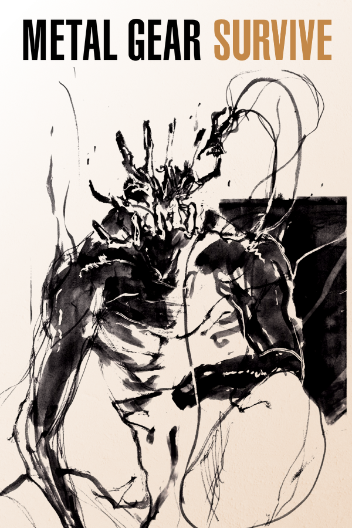
Metal Gear Survive(1975)
CANON
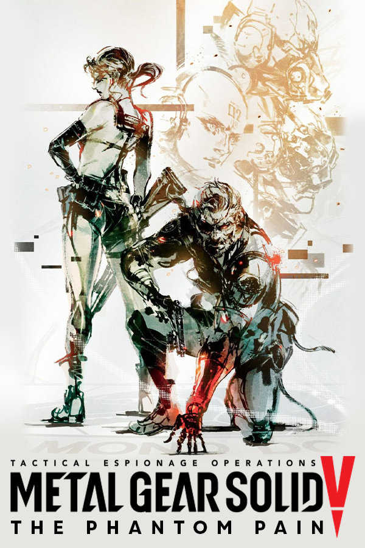
The Phantom Pain(1984)
CANON
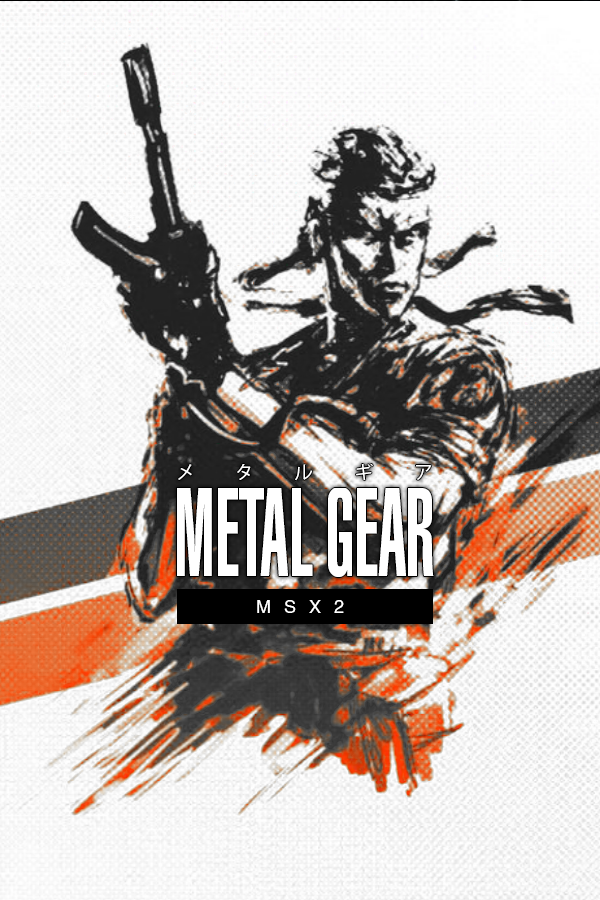
Metal Gear(1995)
PARALLEL
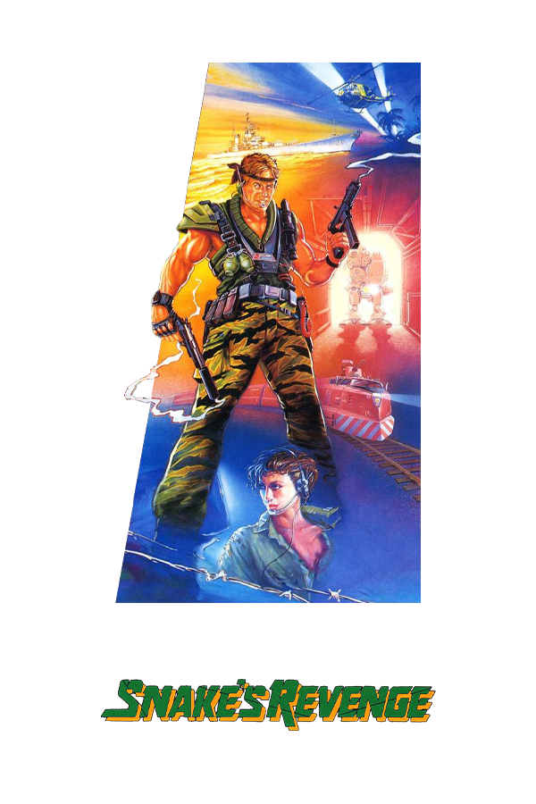
Snake's Revenge(1998)
CANON
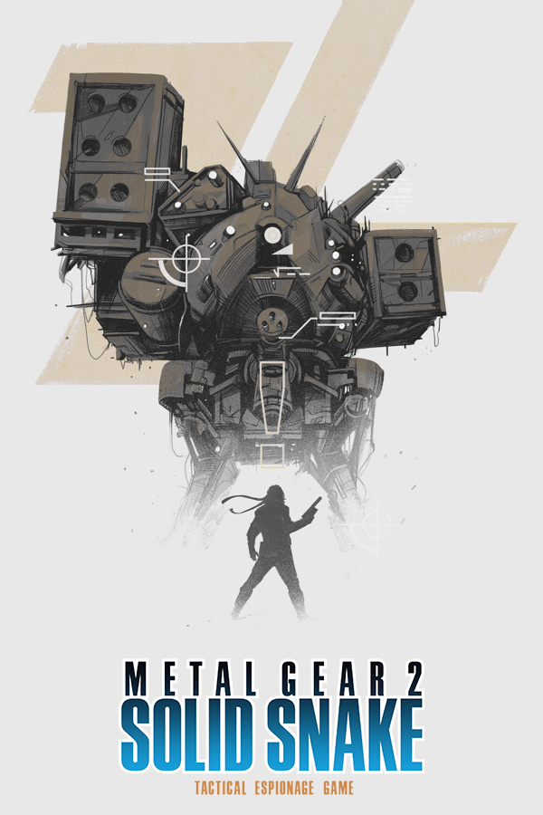
Metal Gear 2(1999)
IGNORED
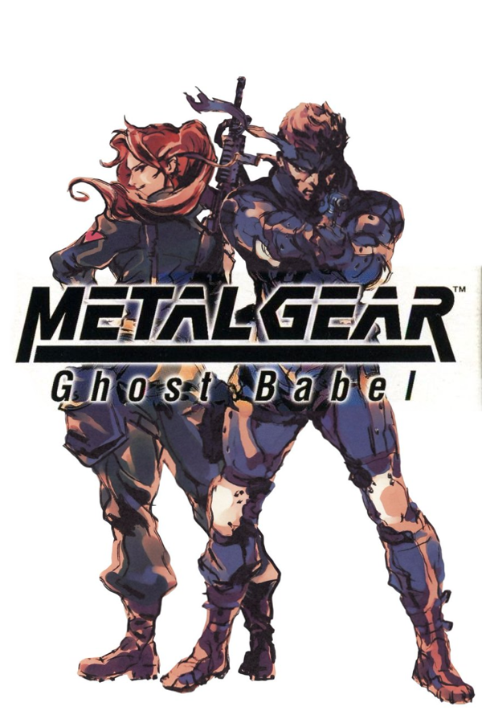
Ghost Babel(2002)
CANON
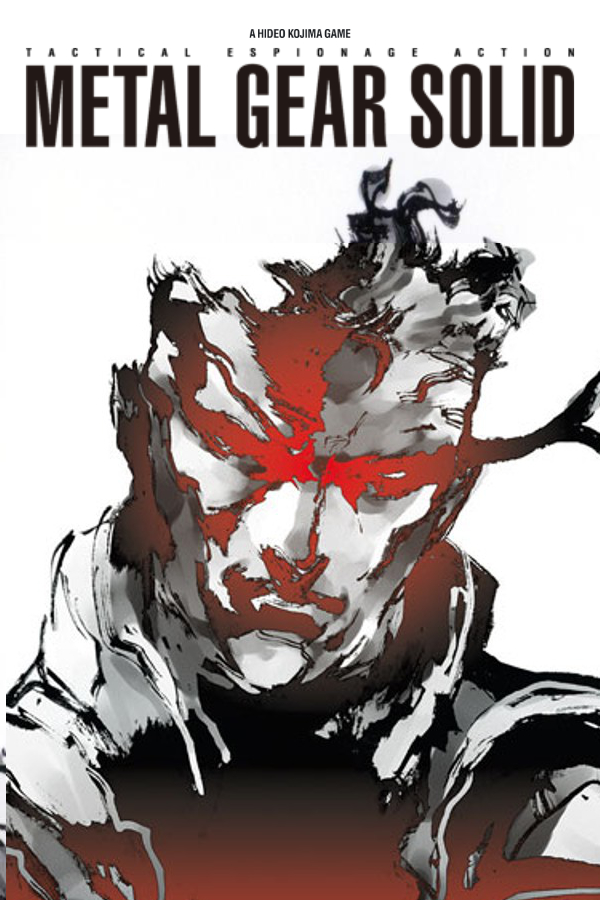
Metal Gear Solid(2005)
CANON
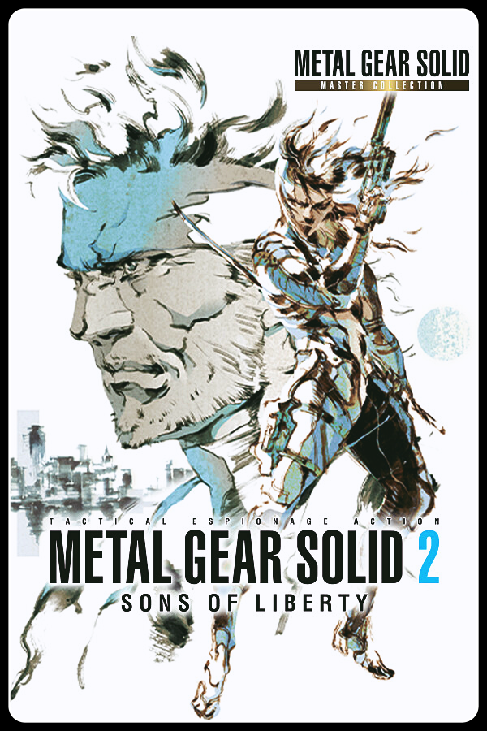
Sons of Liberty(2007-2009)
CANON
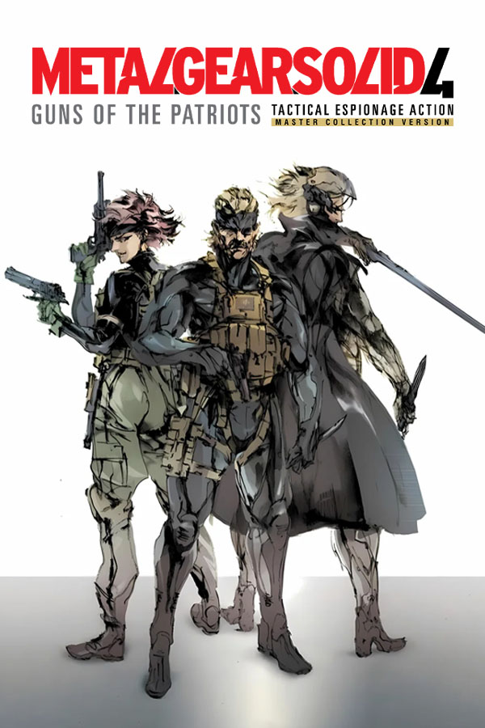
Guns of the Patriots(2014)
ALTERNATE
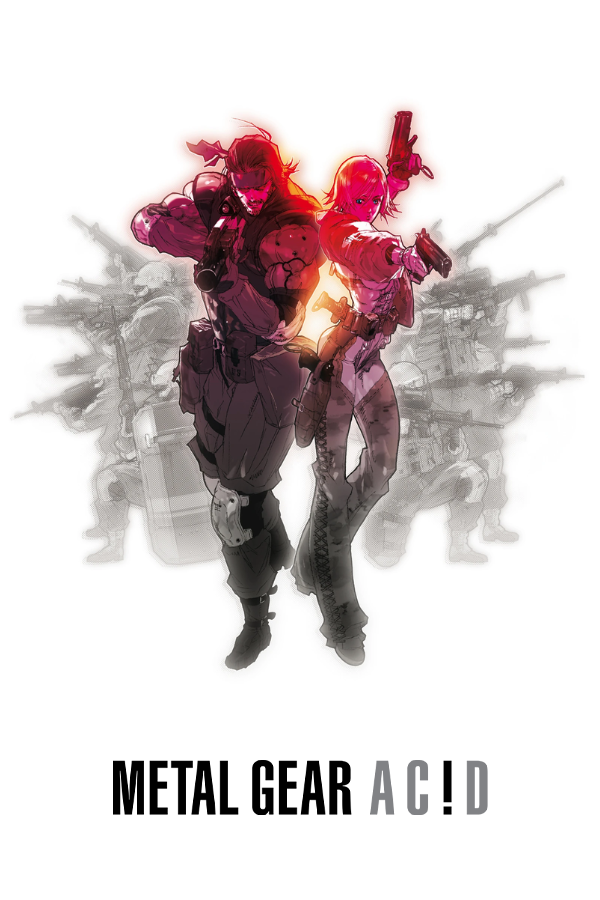
Metal Gear Ac!d(2016)
CANON
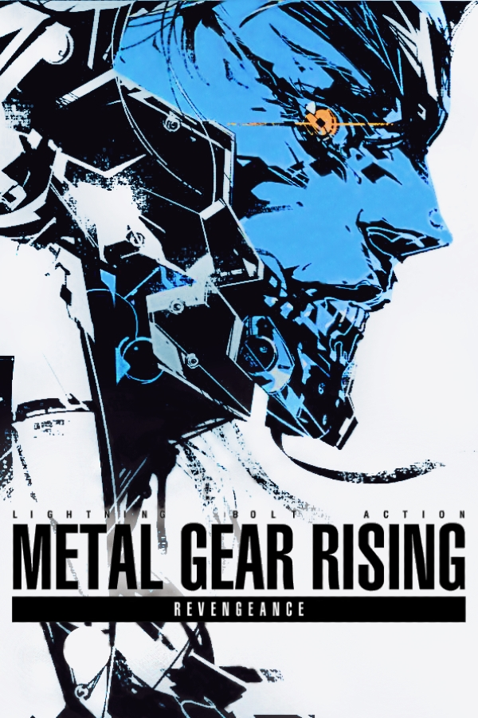
MGR: Revengeance(2018)
ALTERNATE
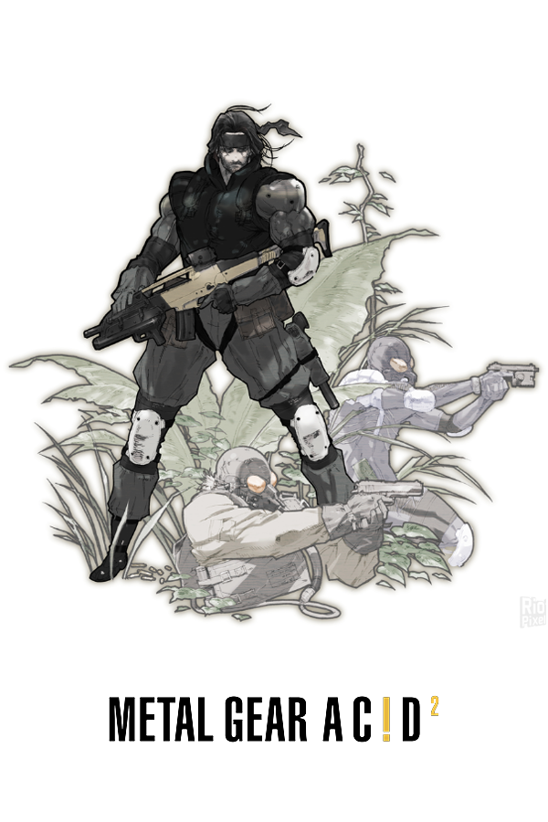
Metal Gear Ac!d 2(2019)